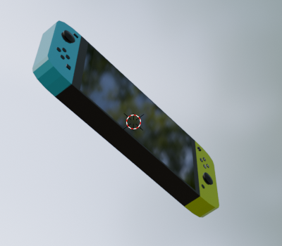

Nintendo switch re-model
During the Computer Graphics course I have learned how to make realistic models of average household items using the Blender program. This model features a Nintendo switch and uses many different tools and textures.

The middle of the model is made from a reflective material to recreate the screen of the console, while the sides feature the solid colored joy-cons. Every joy con has its own buttons that are extruded from the base model to give them realistic look.
